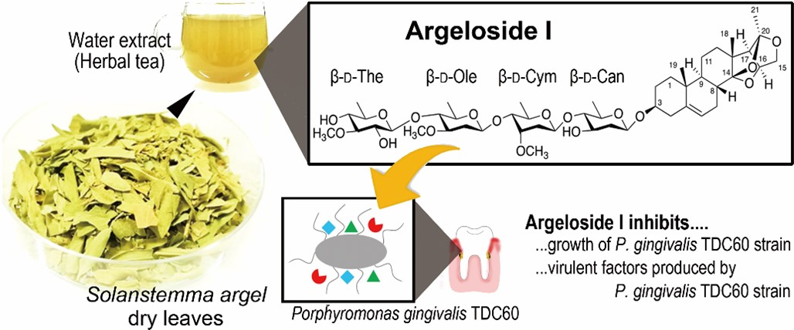
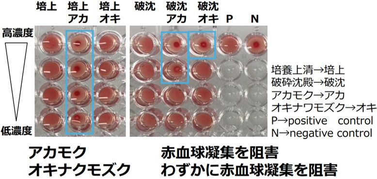

Relatively small organic compounds that play important roles in life move freely inside and outside the cell and regulate various physiological functions. Such small molecules include hormones, neurotransmitters, metabolites, and vitamins, which play an essential role in maintaining and regulating cellular functions. Among small molecules, their usefulness as inhibitors is of particular interest. Inhibitors regulate physiological functions by binding to specific enzymes or receptors and inhibiting their functions. For example, drugs that prevent disease progression inhibit the function of specific enzymes or receptors that are necessary for disease progression. This makes inhibitors an important tool in the treatment of cancer, infectious diseases, and metabolic disorders. Future research that is desirable includes the following studies.
1. Discovery and design of novel small molecule inhibitors: Discovery and design of novel small molecule inhibitors is expected to develop new drugs to address unmet medical needs.
2. Improvement of small molecule target specificity and selectivity: Research to increase specificity and selectivity for target enzymes and receptors is expected to lead to the development of effective therapies with minimal side effects.
3. Elucidation of the mechanism of action of small molecule inhibitors: Detailed understanding of how inhibitors interact with their targets and inhibit their functions will enable development of more effective inhibitors.
4. Study of the pharmacokinetics and pharmacodynamics of small molecules: Detailed studies of the pharmacokinetics and pharmacodynamic properties of small molecules in the body will help establish optimal dosing regimens and dosages to maximize therapeutic efficacy.
Our project is focused on research themes 1-3 above, with emphasis on metabolites and enzymatic reaction products from microbial research and extracts of unutilized resources. In particular, research aimed at utilizing unutilized resources has shown the potential use of various substances and may lead to the discovery of substances that may lead to the effective use of unutilized fishery resources.
●Screening and identification of inhibitors of growth and virulence factors of the periodontal pathogen Porphyromonas gingivalis.
Porphyromonas gingivalisis known to be a major pathogen of periodontal disease. Control of this bacterium is critical to oral hygiene and overall health. In particular, peptidase gingipain and hemagglutinin produced by P. gingivalis are direct causes of bacterial pathogenicity and their function causes periodontal tissue destruction and inflammation.The search for growth inhibitors that target these factors will lead to the development of new therapies and more effective and less side-effective periodontal drugs. This research is also relevant to the maintenance of systemic health. In particular, P. gingivalis is known to cause systemic diseases such as diabetes and cardiovascular disease when it enters the body. Therefore, control of P. gingivalis contributes to the maintenance of systemic health. Inhibition of P. gingivalis activity in the early stages also leads to protection against the progression of periodontal disease and maintenance of long-term oral health. Thus, this study provides a new approach in the prevention and treatment of periodontal disease, and the maintenance of oral health is closely linked to overall health. Therefore, this research is of importance in the broader medical field.
1. isolation and identification of periodontal pathogenesis factor inhibitors in Sudanese medicinal plants
Many medicinal plants are known to be effective against oral diseases. Such plants are found throughout the world. Among them, I focused on traditional medicinal plants from Sudan. The reason is that a foreign student from Sudan came to my laboratory. Based on local information, we focused on several medicinal plants that have been found to improve the oral environment and attempted to isolate substances using periodontal pathogenicity factor assay techniques. So far, fatty acids, glycosides (Fig. 1-1), and polyphenols have been isolated as periodontal pathogenicity factor inhibitors. We expect to discover various new substances in the future.

Fig. 1-1 Periodontal pathogenicity factor Argeloside I extracted from Solanstemma argel, one of Sudan's medicinal plants
2. Isolation and identification of periodontal pathogen inhibitors in underutilized marine resources.
Extracts from various unutilized marine resources are the subject of research at the Research Center for Utilization of Unutilized Biological Resources. Therefore, the coverage of the substances contained therein and their respective functions is a very important mission. Inhibition of periodontal pathogenic factors is one such function that has been used to explore functions from various extracts. Among them, extracts from underutilized seaweeds, Okinawa mozuku and akamoku, were found to have inhibitory effects on periodontal pathogenic factors. Currently, we are isolating substances that show inhibitory effects and screening extracts that show further inhibitory effects.

Fig. 1-2 Inhibitory Effects of Akamoku and Okinawa Mozuku Extracts to Hemagglutinin, a Periodontal Pathogenic Factor
●Structural and functional exploration of unknown substances in microbial metabolites
Microorganisms produce a variety of bioactive substances through diverse metabolic pathways. Among them, there are many unknown substances that have yet to be discovered. Substances produced by microbial metabolism have been the source of many medicines, including antibiotics, anticancer drugs, and immunosuppressive agents. In addition, microbial metabolites are known to play important roles in interactions with other organisms, providing clues to elucidate the mechanisms of symbiotic relationships and pathogenicity. Thus, elucidating the structure of unknown metabolites will deepen our understanding of the metabolic pathways and physiological functions of microorganisms. It will also contribute to the development of biotechnology using microorganisms. Our research is focused on the discovery of new materials and their potential applications, with the expectation of encountering substances that may lead to innovative progress in a wide range of fields.
1. Metabolic analysis and substance production of actinomycete isolates
We have isolated many microorganisms, including actinomycetes. Actinomycetes mainly contribute to the degradation of unused marine resources, and we currently have over 200 species of bacteria stored in our deep freezer. This number will continue to grow in the future. Although the bacteria were collected for degradation and utilization of unused marine resources, we focus not only on chitin and crab shell degradation, but also on substances produced by culturing chitin and crab shells as nutrients. We are currently searching for metabolites of strain NTK2 using LC/MS Progenesis Q1 analysis (Fig. 2-1). At the same time, we are also searching for substances with antibacterial activity, periodontal pathogenicity factor inhibition, and phytopathogenicity growth inhibition as indicators. As soon as a function is found, we will proceed with research to isolate the substance and determine its structure. In the future, we would like to link our research to the manufacturing of products by fermentation using unused marine resources such as crab shells.

Fig. 2-1 Comparison of metabolites of NTK2 strain by Progenesis Q1
●Functional exploration from enzyme reaction products
Technologies related to the discovery of functional substances are predominantly based on extraction and synthesis. Therefore, the process to application after discovery must rely on chemical synthesis. The chemical synthesis of such useful substances requires protection/deprotection processes and the use of strong acids, bases, and organic solvents. Therefore, only a few of the functional substances are actually used. In other words, the process from discovery to application still has significant barriers. For these reasons, it can be assumed that the establishment of a stable supply method, which is conducted simultaneously with substance exploration, is also an important issue. We focused on enzyme synthesis as a new development in enzyme research, which has the potential to establish a method for constructing a library of enzyme reaction products/identifying useful substances and producing them at high levels at the same time. This research aims to make a significant contribution to the creation of a new field of research on the creation of novel functional substances that is directly linked from identification to synthesis.
1. Peptide bond formation by peptidases
When enzymes react in an artificial condition, side reactions that cannot occur in vivo are frequently observed. These reactions are called catalytic promiscuity in the scientific field, and are attracting attention as a new enzyme function. Serine hydrolyase, one of the peptidases, also catalyzes "amylolysis" at the same time as its original function of "hydrolysis. In this reaction, a nucleophilic attack by an amino group of a different molecule instead of a water molecule occurs on the acylenzyme intermediate formed in the enzymatic reaction process, resulting in the formation of a peptide bond. A wide variety of peptides are formed as products, especially when amino acid esters are used as substrates. We have attempted to synthesize short peptides using the function of serine peptidases. This work has led to the synthesis of several functional dipeptides. We have also found that the repertoire of dipeptides that can be synthesized is very diverse. The next step in this project is to construct a peptide library by one-pot/one-step synthesis of various peptides and to explore novel functional substances from the library. From this research, we aim to propose a "new screening method that links the exploration and production of functional substances" by enzymatic methods. Our goal is to realize the search and simple synthesis of substances with excellent functions by enzymatic functions.
Fig. 3-1 Proposal for a new method of exploring for and manufacturing new functional materials using serine hydrolases.
Research on substances requires the ability to observe "extraction," "purification," and "analysis. Of course, the same abilities are required in the study of microorganisms and proteins. Among the above fields, the research of this field often involves extraction considering the characteristics of the target sample, purification using the function of the target sample as an indicator, and evaluation of the sample's function through quantitative and qualitative with numbers. The technique is simple, but some samples may be unstable and difficult to handle. However, once information on how to do is obtained, time constraints can be greatly improved. When you join the Arima lab., we will first spend two months training you in this concept and technique. Many experiments are time-consuming as they involve the evaluation of living organisms, so it is necessary to have the ability to control the time required.
Points to keep in mind
・The information is relatively applicable to daily life and can be used as a portable skill, although the techniques, knowledge, and skills related to handling chemicals are essential.
・The key is to be able to capture the nature of the substance! All information taken with the wrong method is wrong information!
・How do you connect form and function? All substances have form. It is important to understand how form is related to function.

he Arima Laboratory conducts research on the screening of useful microorganisms from the nature, functional and structural analysis of proteins and enzymes, adding value to various substances and phenomena by using enzyme and microbial functions. In the search for useful microorganisms, we also aim to conduct glocal research combining issues specific to the fisheries industry and themes of global thinking to meet the demands of Tottori Prefecture.

Actinomycetes and aquaponics flora: For crab shell waste utilization, we aim to acquire bacteria that have the potential to degrading chitin. Aquaponics: We aim to use the acquired low-temperature nitrifying bacterial flora for the aquaculture of silver salmon and other low-temperature-reared fish.

The goal of protein chemistry research: To analyze the structure of theenzymes and proteins and to reconstitute them into proteins with better functionality. So far, we have conducted research on the conversion of peptide-degrading enzymes to synthetic enzymes.